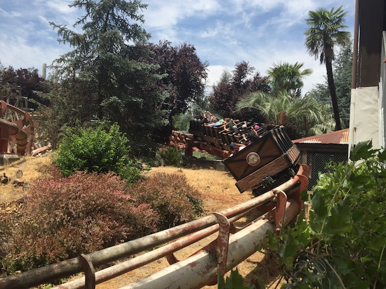
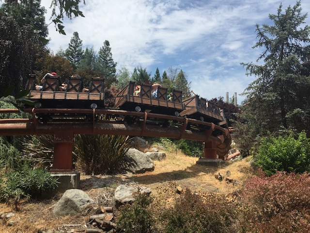
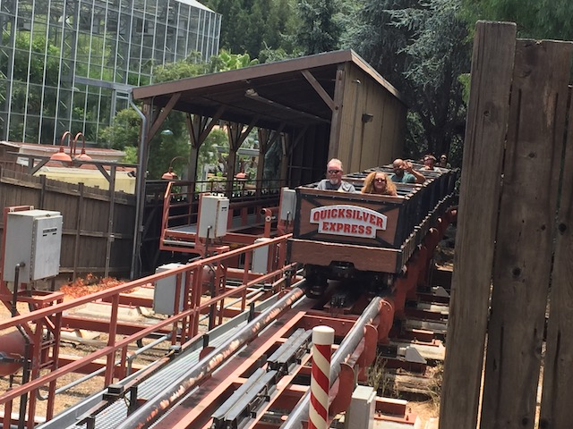
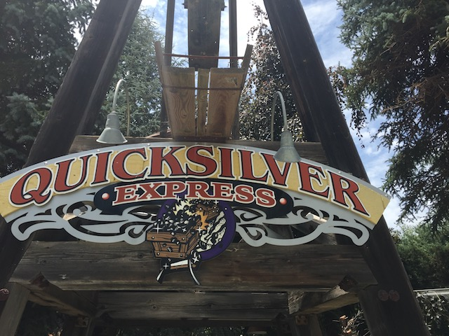

| |
Quicksilver Express Review

We're here at Gilroy Gardens. Today's ride we'll be reviewing for you is Quicksilver Express. The star attraction and what is most likely the main reason you came out to Gilroy Gardens. Who knows. Maybe you guys are just tree people and decided to stop and ride the roller coaster on the way. Either way, we're about to ride Quicksilver Express. The parks mine train, and to this day, the only Morgan mine train that has ever been built. And...it's an intersting ride. Anyways, let's hop in the cars, pull down the lap bar, and away we go. We dip out of the station, roll around a turn, and climb up the first lifthill. Small little lifthill on the hillside, but hey. It does look nice. We head down a dip, and then...go through some zig zags. The ride is literally just turning and going in a zig zag direction. I would say that this is boring. But honestly, I love the setting for this ride. It's a fun little scenic ride, so I'm still enjoying it. We over a tiny little hill, only to head out of the trees, into some straight track, around a turn, and up the lifthill. All right. We're now going into another small lifthill. Let's see what happens from here. We get a great view of the trees all around us. We then head down a small little curved drop that gives us a little speed. We snake around a turn, staying low to the ground, just winding our way on the hillside that we're currently on. We head through another sort of downward helix, staying on the hill, just heading down. We head around a turn, and come across a cool little garden shed. And yeah. You know the drill. TAKE THE GARDEN SHED!!!! We then head around a turn, down a small drop. and dip down to the bottom of the hill. We curve back up the hill, and then head into a downward helix, before going through a couple zig zag turns. Oh look. Another tunnel. A small one. But you know the drill. TAKE THE...Wait. Was there dynamite in there? Oh sh*t. Luckily though, we don't blow up. Our ride just comes to an end as we head into the final brakes, and then the station. On the one hand, this is a pretty weak and lame mine train. I know it's a mine train, but there are such things as really good mine trains for the ride that they are. But with that said, the theming and setting for this ride really is fantastic. I just love the way it snakes through the trees. I guess you could say that this is the Beast of mine trains. Plus, it's easily the best ride at Gilroy Gardens. So yeah. Enjoy the ride.
5/10
Location: Gilroy Gardens
Opened: 2001
Built by: Morgan
Last Ridden: June 24, 2017
Quicksilver Express Photos



Home
|